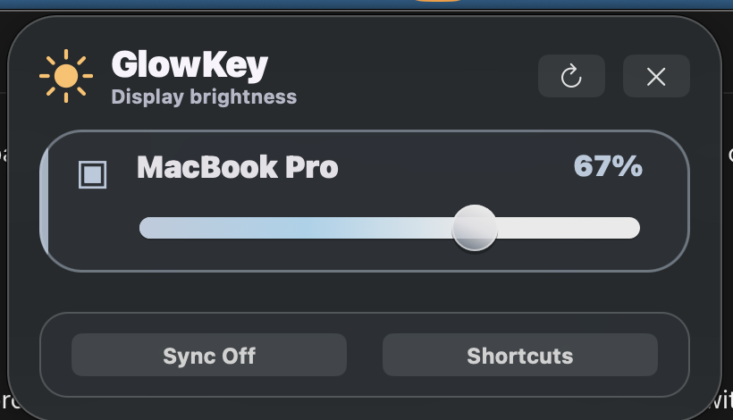

Users move a slider. GlowKey chooses the best backend silently.
Transparent alpha for macOS
Mac brightness for every display.
GlowKey keeps your MacBook brightness native, then gives external monitors clean sliders, cursor-aware shortcuts, and automatic fallback dimming when hardware brightness is blocked.

Built-in display brightness remains native. External screens get their own controls.
Hardware brightness when possible. Smooth dimming when cables or docks block it.
Install
Try the public alpha.
Homebrew is the simplest path while the app is unsigned. ZIP builds are available on GitHub releases too.
brew tap aishuo07/glowkey
brew install --cask glowkey
open /Applications/GlowKey.app